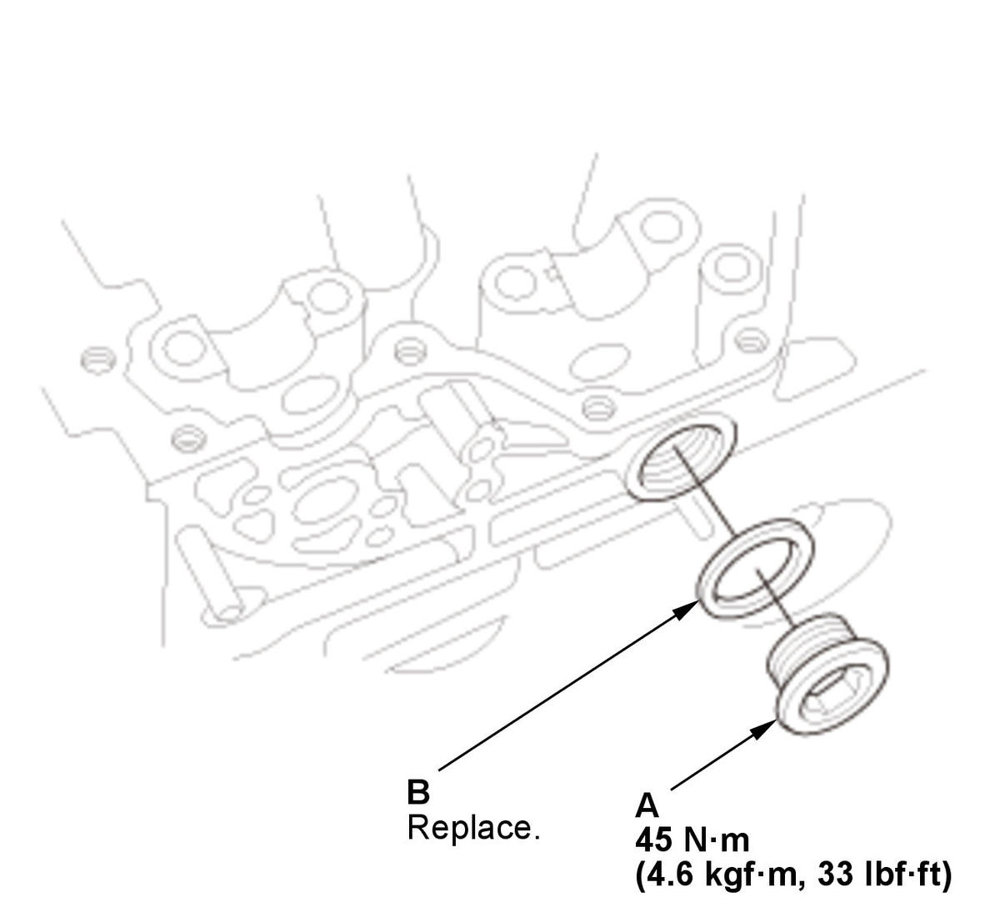
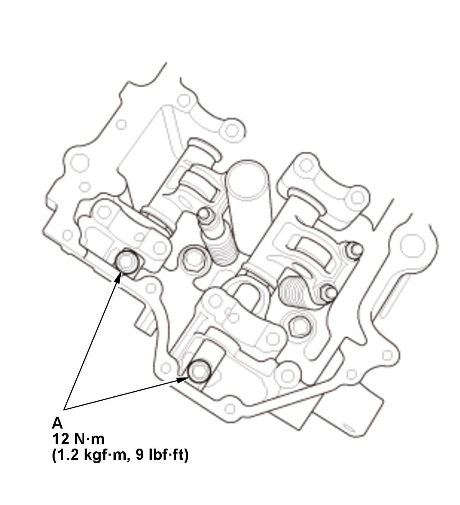

Removal and Installation
- Air Cleaner - Remove
- 12 Volt Battery - Remove
- Intake Air Duct E - Remove
- Camshaft - Remove
- Sealing Bolt - Remove

Courtesy of HONDA, U.S.A., INC.1. Remove the sealing bolt (A) and the washer (B).
NOTE: When the new washer is installed, apply new engine oil to the new washer surfaces. - Rocker Arm Assembly - Remove

Courtesy of HONDA, U.S.A., INC.1. Remove the rocker shaft bolts (A). 2. Remove the intake rocker shaft (A), the exhaust rocker shaft (B), the intake rocker arm assemblies (C), the exhaust rocker arm assemblies (D), and the thrust washers (E). - All Removed Parts - Install
1. Install the parts in the reverse order of removal.